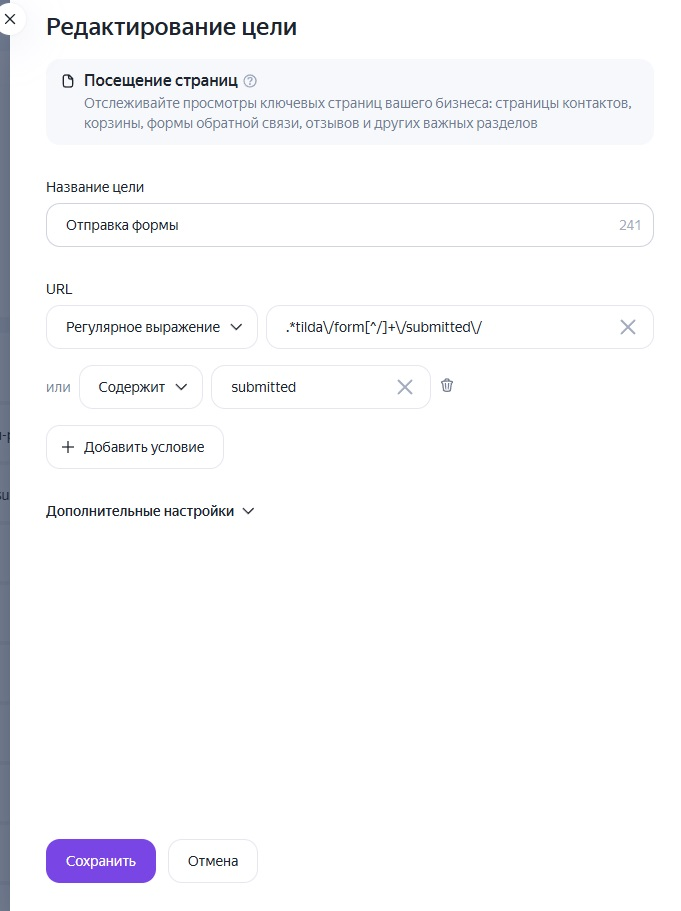
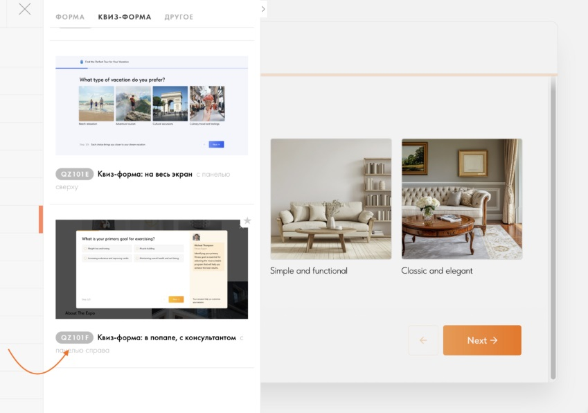

Блог о платном трафике
Как настроить цели Яндекс Метрики на Tilda
Если сайт сделан на Tilda, для нормальной аналитики недостаточно просто установить счетчик Яндекс Метрики. Нужно отдельно проверить, фиксирует ли Метрика реальные обращения: отправку формы, заявку из квиза и, при необходимости, прохождение отдельных шагов квиза.
У Tilda для этого есть удобный механизм виртуальных страниц. После успешной отправки формы в систему аналитики передается адрес вида:
/tilda/form436204329/submitted
Для квизов можно получать дополнительные события по каждому шагу:
/tilda/form836770867/step1
/tilda/form836770867/step2
Именно эти события удобно использовать для настройки целей в Яндекс Метрике. Tilda официально подтверждает такую схему передачи данных.
Сначала подключите Яндекс Метрику к Tilda
Счетчик лучше подключать штатным способом через:
Tilda -> Настройки сайта -> Аналитика -> Яндекс Метрика
Укажите номер счетчика, сохраните изменения и переопубликуйте страницы сайта. Tilda отдельно указывает, что после изменения настроек счетчика страницы нужно публиковать заново.
Это имеет значение именно для целей Tilda. Виртуальные страницы отправки форм автоматически передаются в счетчики, подключенные через раздел «Аналитика». Если счетчик установлен вручную кодом, передачу событий может потребоваться настраивать отдельно.
Как Tilda передает отправку формы в Метрику
После успешной отправки обычной формы Tilda создает виртуальный просмотр страницы.
Например:
/tilda/form436204329/submitted/
При этом посетитель физически никуда не переходит. Для Метрики происходит просмотр виртуального URL, по которому и можно определить успешную отправку.
Это лучше, чем отслеживать обычный клик по кнопке «Отправить». Клик еще не означает заявку. Пользователь может не заполнить обязательное поле, получить ошибку или вообще не завершить отправку формы.
submitted появляется именно после успешной отправки.
Поэтому в рекламных проектах я ориентируюсь на отправку формы, а не на клик по кнопке.
Как настроить одну цель на отправку всех форм Tilda
Если на сайте несколько форм, создавать отдельную основную цель для каждой обычно нет смысла. Форма в шапке, форма внизу страницы, pop-up, форма заказа консультации могут иметь разные номера блоков, но действие для бизнеса одно - пользователь отправил заявку.
Я использую общую цель, которая ловит виртуальные страницы отправки форм Tilda по регулярному выражению:
.*tilda\/form[^/]+\/submitted\/
Смысл конструкции простой. Номер формы между form и submitted может быть любым, поэтому цель продолжит работать для разных форм сайта.
В Яндекс Метрике создайте цель типа «Посещение страниц» и задайте условие по регулярному выражению.
Для подстраховки я дополнительно добавляю условие по submitted.

Официальная документация Tilda тоже рекомендует использовать submitted, если нужно создать одну общую цель для успешной отправки всех форм проекта.
На практике получается универсальная цель, которую не приходится переделывать каждый раз после появления новой формы.
Аналитика - это часть работы над рекламой, а не отдельная задача. Что именно я делаю с рекламным кабинетом и счетчиком, видно в разделе что входит в работу над рекламой.
Нужно ли создавать отдельные цели для разных форм
Общая цель нужна для ответа на простой вопрос: сколько заявок получил сайт.
Но иногда отдельные цели все же полезны.
Например, на одном сайте могут одновременно находиться:
- форма «Получить консультацию»;
- форма подписки;
- форма скачивания презентации;
- заявка на конкретную услугу.
Если ценность этих действий для бизнеса разная, их лучше разделить. Тогда общая цель показывает все отправки, а дополнительные цели помогают понять, какая именно форма принесла конверсию.
Для конкретной формы Tilda показывает ее собственную виртуальную страницу вида:
/tilda/form436204329/submitted
Ее можно использовать как отдельное условие цели. Tilda рекомендует создавать цель типа «Посещение страниц» и указывать виртуальный адрес события.
Как настроить отслеживание квиза Tilda
С квизами есть дополнительный момент, о котором легко забыть.
Если используется блок QZ101 или одна из его вариаций QZ101A-QZ101F, откройте настройки блока и включите:
«Отправлять дополнительные события в систему аналитики»

После этого Tilda начнет передавать виртуальные страницы для отдельных шагов квиза. Например:
/tilda/form836770867/step1
Следующий шаг получит адрес step2, затем step3 и так далее. Просмотр такого виртуального URL означает, что пользователь дошел до соответствующего этапа.
Это особенно полезно для длинных квизов. По одной конечной заявке непонятно, где именно люди отваливаются.
Предположим, в квизе пять шагов. Пользователи массово начинают его и доходят до второго вопроса, но до четвертого добирается уже небольшая часть. Тут проблема может быть не в рекламном трафике вообще. Возможно, сам квиз слишком длинный, один из вопросов непонятен или вы слишком рано запрашиваете информацию, которую человек пока не готов сообщать.
Отслеживание шагов позволяет увидеть эту картину в цифрах.
Как создать цель на конкретный шаг квиза
Для конкретного шага используйте полный адрес виртуальной страницы.
Например:
/tilda/form836770867/step1
Для второго шага:
/tilda/form836770867/step2
В этом случае не нужно использовать слишком широкое условие вроде step. Иначе в одну цель попадут разные этапы квиза.
Tilda прямо рекомендует для отслеживания определенного шага указывать виртуальную страницу полностью и использовать в Яндекс Метрике условие точного совпадения.
Я обычно называю такие цели максимально понятно:
Квиз - шаг 1Квиз - шаг 2Квиз - отправка формы
Через несколько месяцев это сильно упрощает работу с отчетами. Названия вроде goal1, forma2 или test очень быстро превращают Метрику в свалку.
Какие цели передавать в Яндекс Директ
Для рекламных кампаний основная цель должна соответствовать реальному полезному действию.
Если бизнесу нужны заявки, основной конверсией логично считать успешную отправку формы. Переход на первый шаг квиза или открытие формы - более слабые сигналы.
Шаги квиза я использую прежде всего для анализа воронки. В отдельных случаях их можно применять как дополнительные сигналы, но приравнивать открытие первого вопроса к полноценной заявке точно не стоит.
В Яндекс Директе целевые действия используются в работе конверсионных стратегий, поэтому ошибка в настройке аналитики влияет уже не только на красивые цифры в отчете. Рекламная система может оптимизироваться по тем действиям, которые вы ей передаете. От выбранной цели зависит и стоимость заявки: как она считается, я разбирал в статье про CPA в Яндекс Директе.
Если реклама и аналитика нужны в одних руках, посмотрите, как я настраиваю и веду Яндекс Директ.
Как проверить, что цель действительно работает
После настройки не стоит считать задачу законченной. Отправьте тестовую заявку самостоятельно.
Откройте опубликованную страницу сайта, заполните форму обычным способом и дождитесь сообщения об успешной отправке.
Затем проверьте данные в Метрике.
Tilda указывает, что информация о виртуальных страницах появляется в Яндекс Метрике с задержкой примерно 5-10 минут. Найти такие просмотры можно в отчете «Содержание -> Популярное».
Для более точной диагностики можно использовать режим отладки Метрики. Tilda рекомендует открыть сайт с параметром ?_ym_debug=1, выполнить нужное действие и проверить событие через консоль браузера.
Проверять цель нужно именно реальной отправкой формы. Просто открыть настройки Метрики и увидеть созданную цель недостаточно.
Частые ошибки
Самая частая ошибка - отслеживать нажатие на кнопку вместо успешной заявки. В отчетах после этого появляется больше «конверсий», чем фактических обращений.
Вторая проблема - отдельная цель на конкретную форму используется как единственная основная цель сайта. Потом на страницу добавляют новую форму с другим ID, заявки через нее приходят, а Метрика их в старую цель уже не записывает.
Поэтому для общей отправки форм удобнее использовать:
.*tilda\/form[^/]+\/submitted\/
и дополнительно условие submitted.
Еще одна типичная проблема относится к квизам: владелец сайта создает цели step1, step2, но не включает в QZ101 настройку «Отправлять дополнительные события в систему аналитики». В результате Метрике просто нечего фиксировать. Для передачи шагов эту настройку нужно включить в самом блоке квиза.
Можно ли отслеживать эти же события в Google Analytics
Да. Tilda передает виртуальные страницы и в Google Analytics. Для формы используется тот же адрес вида /tilda/form.../submitted, а для квиза - /tilda/form.../step1.
В актуальной схеме Google Analytics сначала создается событие по параметру page_path, а нужное событие затем можно отметить как ключевое. Для конкретного шага квиза Tilda рекомендует использовать точное соответствие виртуальному адресу.
Но если основная реклама идет через Яндекс Директ, я в первую очередь проверяю корректность целей именно в Яндекс Метрике. Там ошибка быстрее всего начинает влиять и на анализ рекламных кампаний, и на работу конверсионных стратегий.
Коротко
Для обычных форм Tilda основная цель должна фиксировать успешную отправку, а не клик по кнопке. Для всех форм сайта удобно использовать регулярное выражение:
.*tilda\/form[^/]+\/submitted\/
Дополнительно можно добавить условие submitted.
Для квиза QZ101 сначала включите «Отправлять дополнительные события в систему аналитики», после чего отслеживайте нужные этапы по виртуальным страницам:
/tilda/form836770867/step1
/tilda/form836770867/step2
/tilda/form836770867/step3
И обязательно отправьте тестовую заявку после настройки. Цель, которую никто не проверил на реальном сайте, я настроенной не считаю.